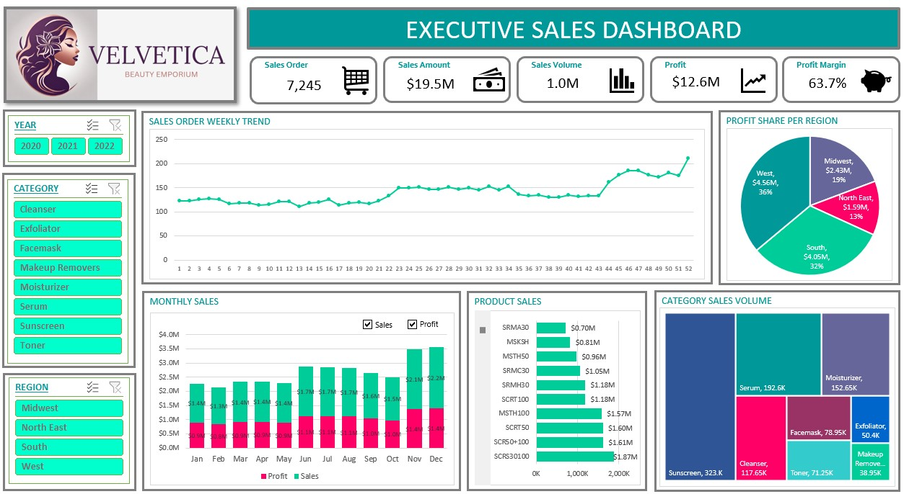

Projects
Here are some of the projects I've worked on, from building data pipelines and validating datasets to exploring data and creating dashboards. Each project has helped me develop my technical skills and approach to solving problems with data.
ReachEd
Education Access Intelligence
Best Capstone Award | FTW Foundation x Accenture
 ReachEd is a team-developed education data platform
designed to help local government units identify
areas experiencing pressure on school, classroom,
and teacher resources.
ReachEd is a team-developed education data platform
designed to help local government units identify
areas experiencing pressure on school, classroom,
and teacher resources.
The project brings together education, population, and geographic datasets to support more consistent comparisons and resource prioritization.
My Contributions
- Built and validated Bronze-to-Silver pipelines for geographic boundaries and school-age population datasets.
- Developed geographic data integration logic using the Philippine Standard Geographic Code (PSGC).
- Contributed to the data model and entity relationship diagram (ERD).
- Helped improve data quality checks, pipeline dependencies, documentation, and pull-request reviews.
Technologies: Databricks, SQL, Python, PySpark, Git, GitHub
NYC Mobility
Data Engineering Pipeline
 NYC Mobility is a collaborative data engineering
project involving New York City taxi trip data
and weather information.
NYC Mobility is a collaborative data engineering
project involving New York City taxi trip data
and weather information.
The project focuses on ingesting, processing, and validating data to support downstream analysis of mobility patterns.
My Contributions
- Built a weather ingestion pipeline using the Open-Meteo API.
- Worked on data quality checks with PASS, WARN, and FAIL outcomes.
- Configured Databricks job dependencies and supported pipeline monitoring and failure investigation.
Technologies: Databricks, Python, SQL, Git, GitHub, REST API
SQL
SQL projects focused on data cleaning,
exploration, and querying structured datasets.
These exercises helped me practice transforming
raw data into more useful information.
Skills Applied: SQL queries, joins, aggregations, data cleaning, and exploratory analysis.
Power BI
 Created interactive dashboards to explore
performance metrics and present data
in a way that is easier to understand.
Created interactive dashboards to explore
performance metrics and present data
in a way that is easier to understand.
Skills Applied: Power BI, DAX, data modeling, dashboard development, and data visualization.
Microsoft Excel

Skills Applied: Excel formulas, data cleaning, data manipulation, charts, and dashboards.
Tableau
 Explored data visualization using Tableau,
focusing on presenting trends and patterns
through charts and interactive dashboards.
Explored data visualization using Tableau,
focusing on presenting trends and patterns
through charts and interactive dashboards.
Skills Applied: Tableau, data visualization, dashboard design, and data storytelling.
Google Sheets
 Created a project tracking solution using
Google Sheets to organize tasks, monitor
progress, and support collaboration.
Created a project tracking solution using
Google Sheets to organize tasks, monitor
progress, and support collaboration.
Skills Applied: Google Sheets, formulas, task tracking, and project organization.
Python
A Python project exploring relationships
between variables through correlation analysis.
Skills Applied: Python, data exploration, and statistical analysis.
Project in progress.